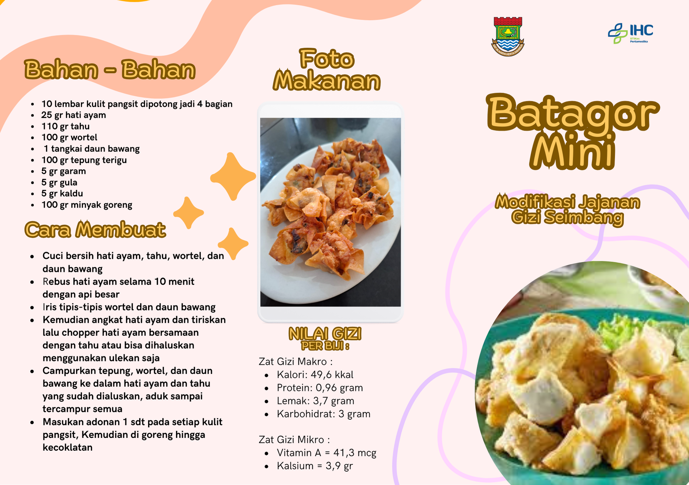
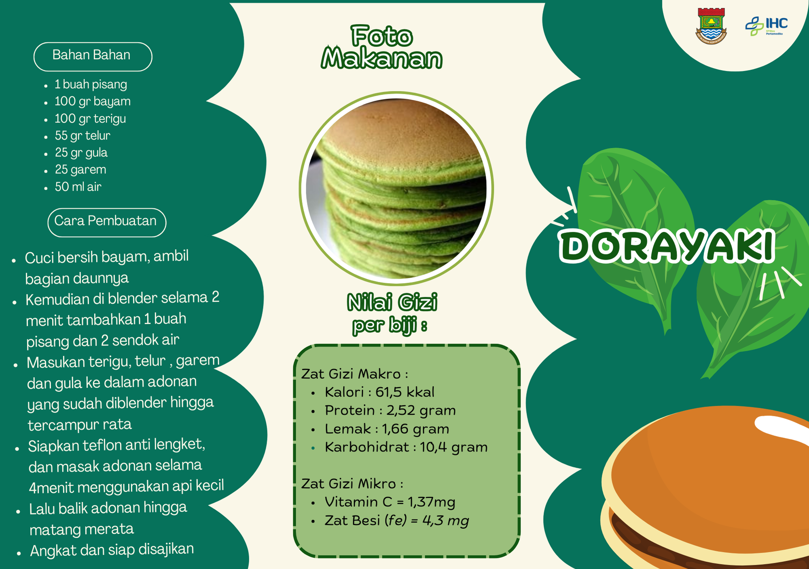
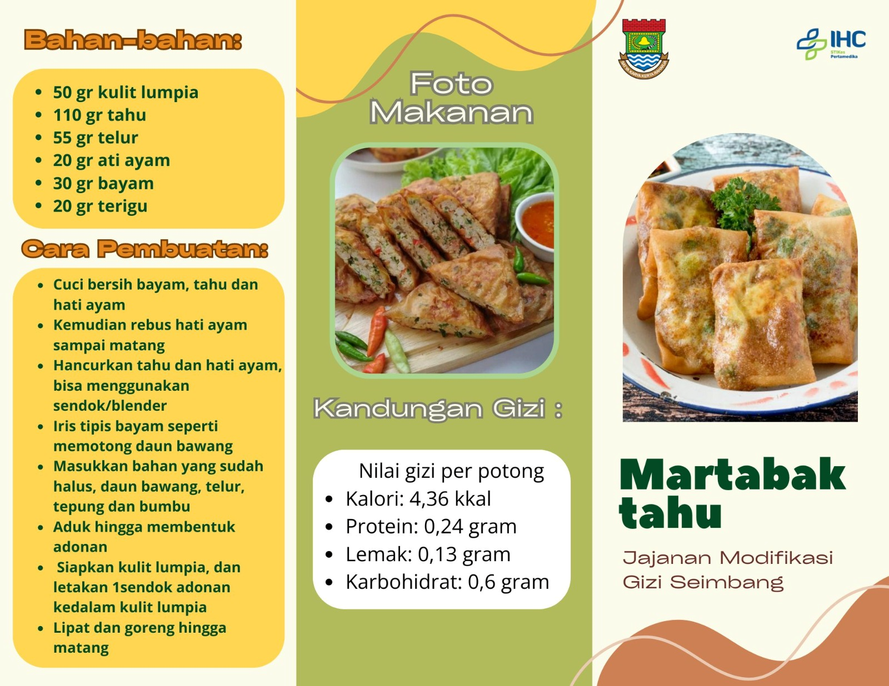
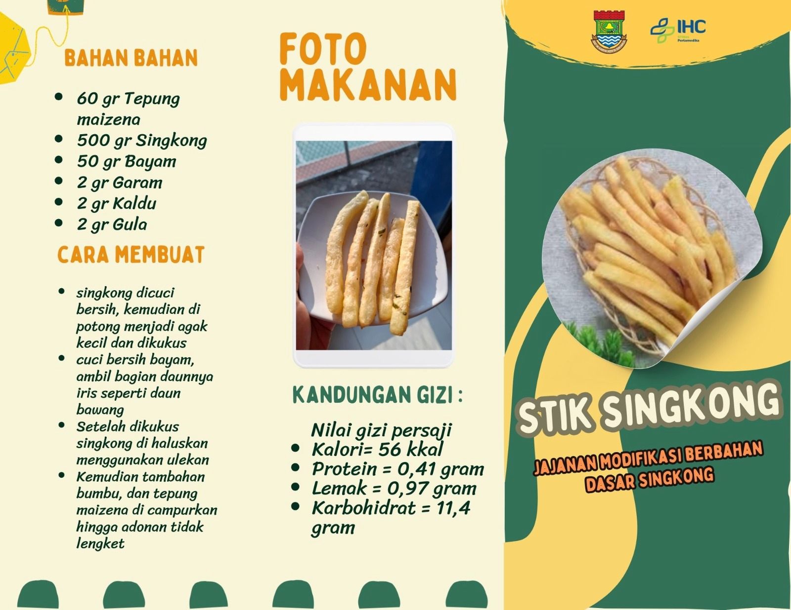
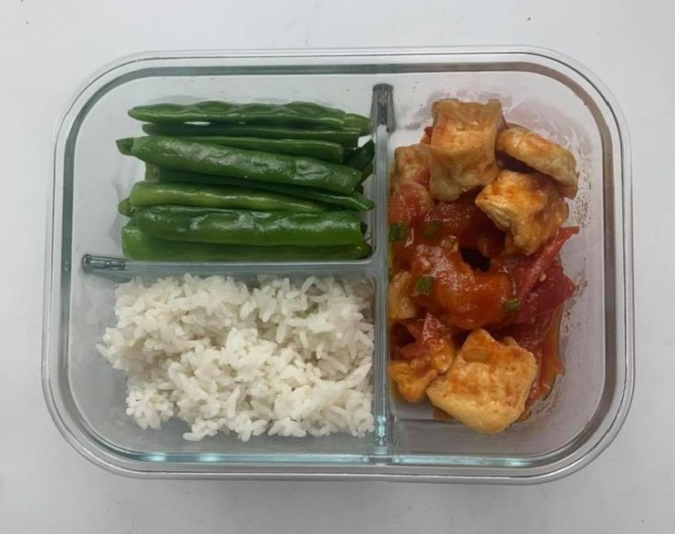
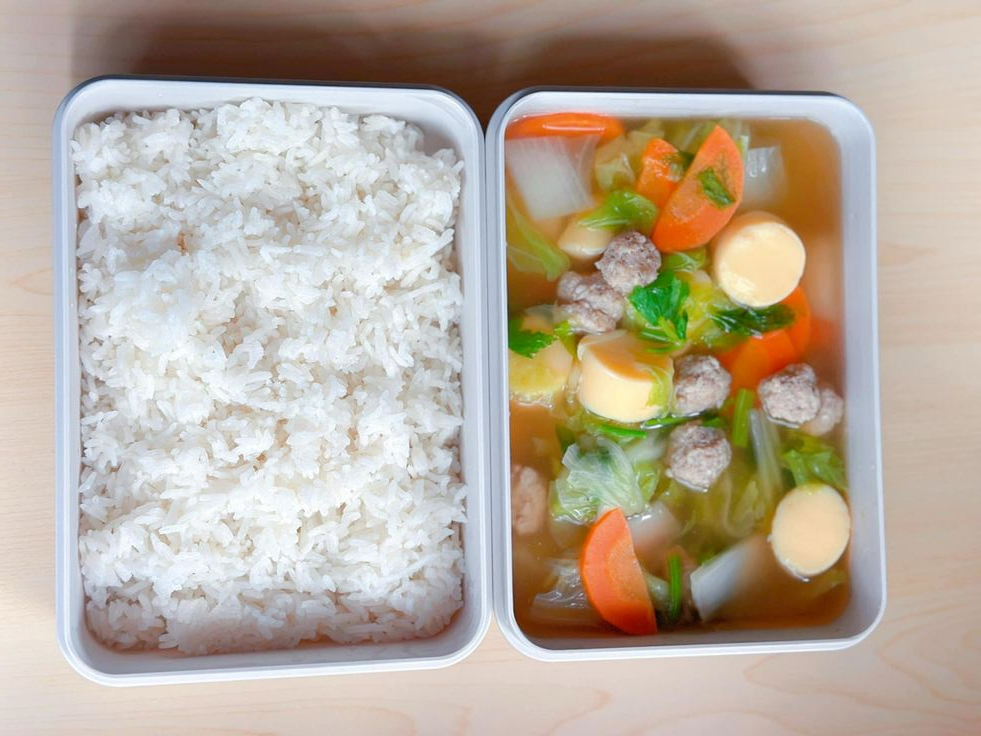
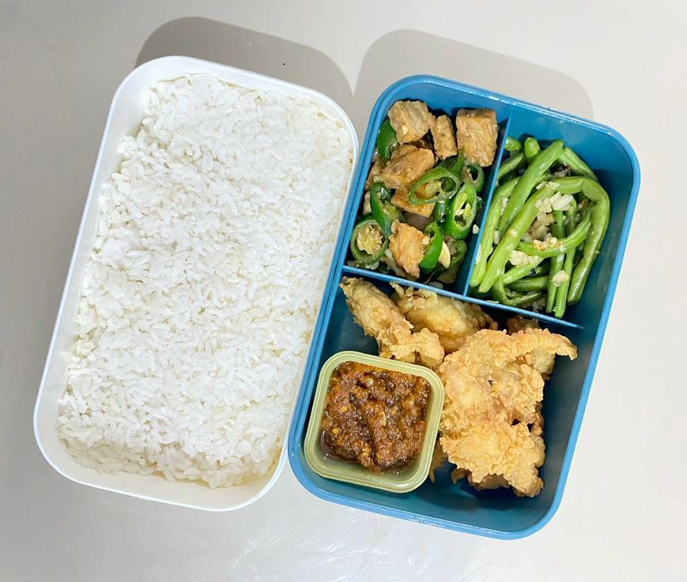
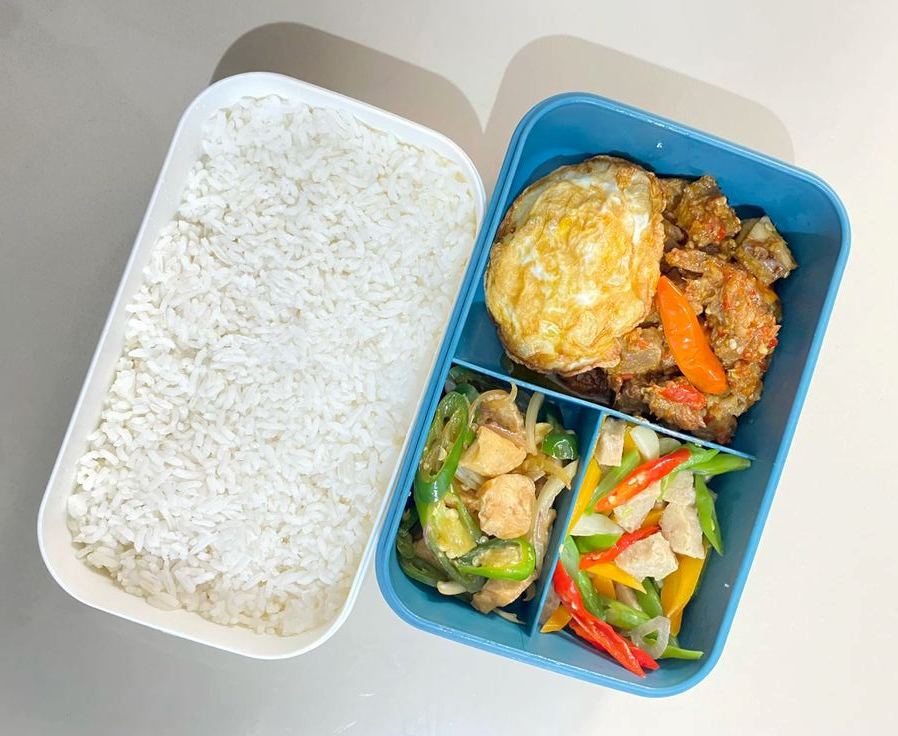

Inspirasi Makanan Untuk Bekal
Batagor Mini

Dorayaki Bayam

Pancake Wortel
Martabak Tahu

Stick Singkong

Tahu Balado dan Buncis Rebus

Sup Tahu Bakso

Ayam Goreng Tepung, Buncis Tumis,
dan Tempe Orek

Balado Daging, Buncis Tumis Bakso,
dan Ayam Teriyaki
